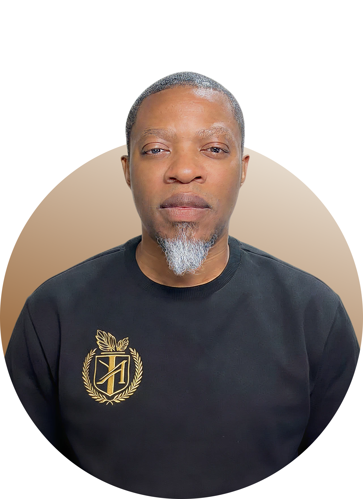

One-on-one sessions with Hubert
Find the ground
beneath the storm.
If you're navigating emotional pain, a spiritual awakening you didn't ask for, or a life that no longer makes sense — this is a space to think clearly, breathe honestly, and find your way back to yourself.

"Most people don't need more advice. They need to be genuinely heard."
— Hubert, Still GroundWhat We Work On
The things most people
don't know how to say out loud
Emotional Pain & Crisis
Depression, anxiety, grief, anger, disappointment — not as diagnoses to manage, but as signals to understand. We work beneath the surface, where the real story lives.
Spiritual Awakening
When something inside you shifts and the life you built no longer fits — that disorientation has meaning. Hubert has been there, and can help you navigate it without losing your mind.
Direction & Identity
Feeling lost isn't a flaw. Often it means you've outgrown a version of yourself. These sessions help you see clearly what's next — not by prescribing answers, but by asking better questions.
Subconscious Patterns
The same situations keep repeating. The same reactions surface. Something underneath is running the show. We look at the pattern, not just the problem.
Meditation & Awareness
Twenty years of practice. We can explore how stillness actually works — not as a technique to perform, but as a living shift in how you relate to your own mind.
Life Transitions
Breakups, loss, career pivots, existential doubt. The moments where life demands something new from you — and you're not yet sure what you have to offer.
About Hubert
"I didn't build this from a course or a certification. I built it from twenty years of sitting with my own darkness — and eventually finding something beneath it that doesn't move."
Hubert has spent over two decades working through what most people are still trying to outrun: depression, chronic anxiety, anger, loss, the collapse of identity, and the strange territory that opens up when you start to wake up spiritually.
His experience isn't theoretical. He's used meditation not as a wellness habit but as a survival tool — and eventually as a doorway into something deeper. He knows what it feels like when the mind goes quiet for the first time. He also knows what it feels like when it doesn't.
Still Ground was created for the people who are tired of being given frameworks when what they actually need is presence. No performance, no script. Just honest conversation with someone who has genuinely been there.
How It Works
Simple, direct,
and real.
No intake forms that take forty minutes. No programs with twelve modules and a certificate at the end. Just a video call — you, Hubert, and enough honesty to actually move something.
Book Your Session
Choose a session type and pick a time that works. You'll get a Zoom link immediately. No credit card required upfront.
We Talk
A real conversation — not a coaching script. Hubert listens deeply and responds honestly. Whatever you bring, that's where we start.
You Decide the Value
After the session, you contribute whatever reflects what you received. No fixed price. That's not charity — it's integrity on both sides.
Continue If It Helps
Some people need one session. Others come back for months. There's no pressure either way. You'll know what's right for you.
The Payment Model
Pay what it was worth to you.
"I don't charge a fixed fee. What I ask is that after our session, you give what felt true to the value you received. No minimum, no maximum. That's not charity — it's integrity on both sides."
This model exists because genuine transformation doesn't come with a standardized price tag. Some sessions change one thing. Others change everything. After we speak, you'll know exactly what it was worth — and I trust you to honour that.
Session Types
Choose what fits where you are.
60 Minutes
Discovery Session
Your first conversation with Hubert. A space to open up without agenda — to see what rises to the surface and what might be possible. No pressure, no pitch.
Book this session →4 Sessions · 60 Min Each
The Journey
Four conversations over four to six weeks. Enough time to actually go somewhere — to peel back a layer, understand a pattern, and feel something genuinely shift.
Book this session →Ongoing · Your Pace
Open Continuity
No fixed end date. You come when you need it, as often as it helps. For those navigating a longer passage — an awakening, a breakdown, a rebuilding.
Book this session →Ready to Begin
The ground is already
there. Let's find it.
Pick a time that works. Bring whatever is on your mind. No preparation needed — just a willingness to be honest. That's more than enough to start.
Schedule a Video CallGet in Touch
Not sure where to start?
Just reach out.
If you have a question, need more information before booking, or simply want to say something — this is the place. Hubert reads every message personally.